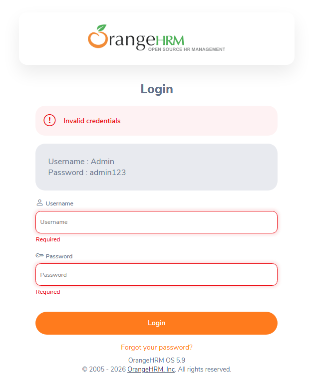
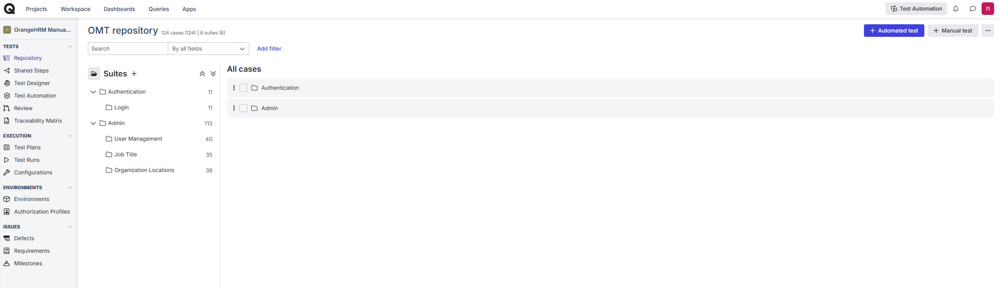
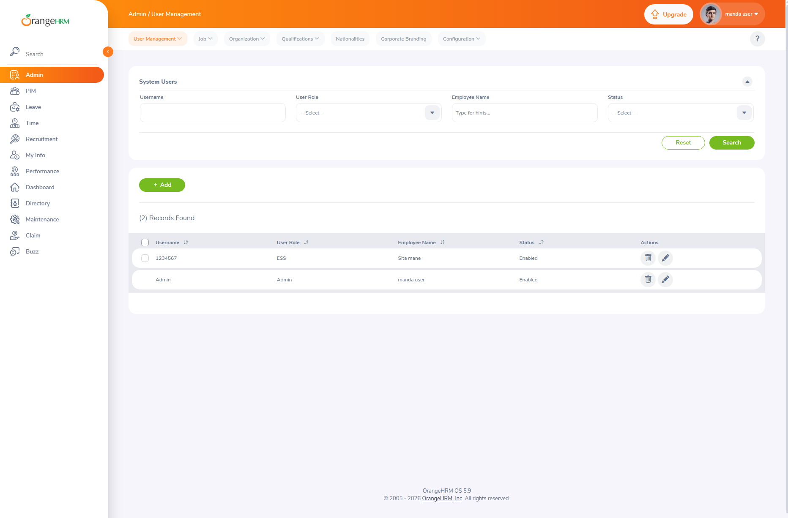

Pengujian fungsional manual aplikasi HRMS OrangeHRM
Siklus pengujian penuh terhadap modul autentikasi dan administrasi sebuah sistem manajemen SDM — dari analisis aplikasi, penyusunan 124 test case, eksekusi terdokumentasi di Qase, sampai pelaporan defect. Setiap test case punya bukti tangkapan layarnya sendiri.
- Peran
- QA Engineer — analisis aplikasi, desain dan eksekusi test case, pelaporan defect
- Aplikasi diuji
- OrangeHRM Demo (OrangeHRM OS 5.9) — sistem manajemen SDM berbasis web
- Tools
- Qase.io, Google Chrome, Windows 11, Markdown, GitHub
- Eksekusi
- 124 test case · 4 modul · test run selesai 30 Juli 2026
- Kode
- Repositori publik di GitHub
Kenapa manual testing, dan kenapa HRMS
Otomasi bagus untuk mengulang hal yang sudah diketahui. Yang tidak bisa digantikannya adalah tahap awal: memahami aplikasi asing, menebak di mana logikanya rapuh, dan merumuskan apa arti “benar” untuk tiap fitur. Kemampuan itu yang saya latih di sini.
OrangeHRM dipilih karena bukan aplikasi contoh yang disederhanakan. Di dalamnya ada form bertingkat, aturan hak akses berbasis peran, validasi duplikat, unggah berkas, pencarian dengan banyak filter, dan pengurutan tabel — kumpulan perilaku yang betul-betul menuntut test case dirancang, bukan sekadar diklik satu per satu.
Cakupan dan hasil
Empat modul diuji sampai tuntas. Jumlah bukti tangkapan layar sama persis dengan jumlah test case di tiap modul — tidak ada test case yang statusnya diisi tanpa bukti.
| Modul | Fitur | Test case | Lulus | Gagal |
|---|---|---|---|---|
| Authentication | Login dan validasi form | 11 | 10 | 1 |
| Admin | User Management | 40 | 40 | 0 |
| Admin | Job Titles | 35 | 35 | 0 |
| Admin | Organization — Locations | 38 | 38 | 0 |
| Total | 124 | 123 | 1 |
Test run dijalankan sebagai satu siklus regression bernama Regression Testing v1.0 dengan tingkat penyelesaian 124 dari 124. Durasi tiap test case ikut tercatat, sehingga terlihat modul mana yang paling menyita waktu pengujian.

Jenis pengujian yang dijalankan
Validasi form
Field wajib, batas panjang karakter, dan pesan kesalahan yang muncul di tiap kondisi.
Operasi CRUD
Tambah, ubah, hapus, dan tampil untuk pengguna, jabatan, serta lokasi organisasi.
Validasi duplikat
Sistem harus menolak nama jabatan atau username yang sudah terpakai.
Pencarian dan pengurutan
Filter tunggal, filter gabungan, filter kosong, dan tombol reset.
Unggah berkas
Batas ukuran dan jenis berkas yang diterima pada form yang menyediakannya.
Exploratory testing
Penelusuran bebas di luar skrip untuk menemukan perilaku yang tidak terpikir saat desain test case.
Teknik yang mendasarinya: black box testing, equivalence partitioning, boundary value analysis, dan error guessing — dipakai untuk membatasi jumlah test case tanpa mengorbankan cakupan.
Defect yang ditemukan

Yang membuat ini layak dilaporkan bukan tampilannya, tapi kontradiksinya. Validasi “Required” berjalan di sisi klien dan menghentikan request sebelum dikirim — artinya tidak ada percobaan autentikasi yang terjadi. Pesan “Invalid credentials” yang masih terpampang jadi keterangan tentang sesuatu yang barusan tidak pernah dilakukan sistem. Pengguna menghadapi dua pesan yang menunjuk ke penyebab berbeda untuk satu tindakan yang sama.
Severity saya tetapkan Low karena fungsi login tidak terganggu dan tidak ada data yang salah tersimpan, tapi priority Medium karena letaknya di halaman pertama yang dilihat setiap pengguna. Dugaan penyebabnya, status galat autentikasi tidak dibersihkan sebelum validasi klien dijalankan — dan itu saya tulis eksplisit sebagai asumsi, karena tanpa akses source code penyebab pastinya tidak bisa dipastikan.
Pengelolaan test case
Seluruh test case dirapikan jadi enam suite di Qase, lengkap dengan langkah, data uji, dan hasil yang diharapkan. Struktur ini yang membuat satu siklus regression bisa dijalankan ulang oleh orang lain tanpa perlu bertanya.

Di repositori, dokumentasinya dipisah mengikuti urutan kerja QA: rencana uji, skenario, test case, catatan eksekusi, laporan bug, lalu laporan ringkasan. Pemisahan itu disengaja — skenario menjawab apa yang perlu dipastikan, test case menjawab bagaimana memastikannya, dan keduanya berubah dengan alasan yang berbeda.

Yang saya pelajari
Angka lulus 99% pada awalnya terasa seperti kabar baik. Setelah dipikir lagi, itu justru pertanyaan: apakah aplikasinya memang sekuat itu, atau test case saya yang terlalu ramah?
Membaca ulang test case yang saya tulis, polanya kelihatan. Sebagian besar menguji jalur yang diperkirakan berhasil — isi form dengan benar, simpan, pastikan tersimpan. Test case yang benar-benar menekan sistem jumlahnya jauh lebih sedikit, dan satu-satunya defect yang ketemu justru datang dari sana: dari urutan tindakan yang aneh, yaitu gagal login lalu mengosongkan field.
Pelajarannya, test case cenderung mewarisi asumsi penulisnya. Kalau saya membayangkan pengguna yang tertib, saya akan menulis pengujian untuk pengguna yang tertib, dan hasilnya hijau semua. Di siklus berikutnya proporsinya saya ubah: lebih banyak skenario negatif dan urutan tindakan yang tidak lazim, karena di situlah bug sebenarnya tinggal.
Tahap berikutnya
- Memperluas cakupan ke modul PIM, Leave, dan Recruitment.
- Menambahkan verifikasi data lewat SQL untuk memastikan yang tampil di layar sama dengan yang tersimpan.
- Mengotomasi skenario regression yang sudah stabil memakai Playwright.
Akses dokumentasi. Rencana uji, skenario, 124 test case, catatan eksekusi, laporan bug, laporan ringkasan, dan seluruh bukti tangkapan layar tersedia terbuka di repositori GitHub.
OrangeHRM Demo adalah instans percobaan publik yang disediakan pengembangnya untuk dicoba siapa saja. Pengujian dilakukan sebatas fungsionalitas antarmuka, tanpa uji beban maupun pengujian keamanan.